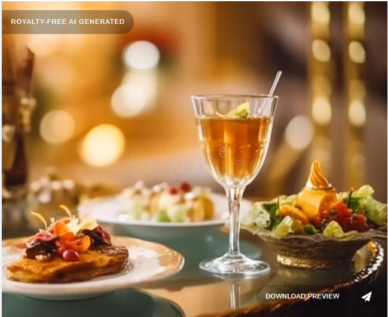
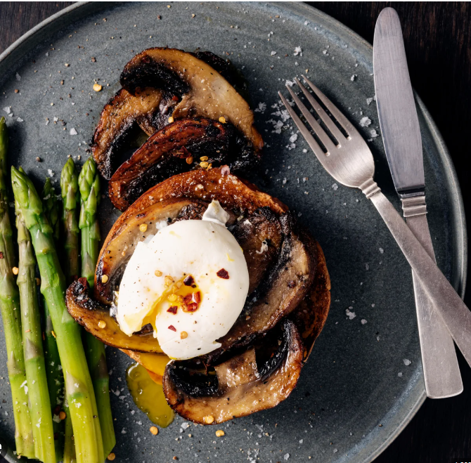

The Living Menu
Seasonal expression through evolving cuisine.

Chef's Recommendations

Heirloom Tomato Tart
Grilled mushrooms with asparagus and a soft egg

Seared Wild Salmon
Roasted root vegetables, and a citrus herb reduction.
Farm to Table
We partner with local farms to bring sustainable, responsibly sourced ingredients directly to your table.